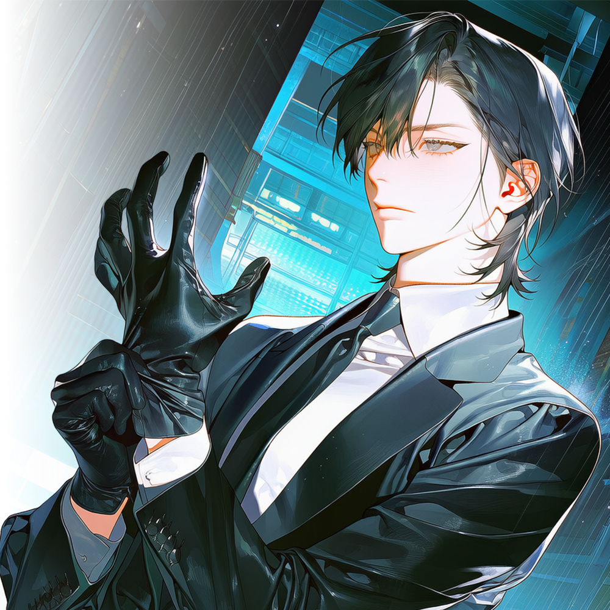

차유림
판단의 기준이자 유일한 주인. 유림이 포기한 원한까지 대신 기억한다.
CHARACTER DOSSIER · OH JIAN
명월파 · 실행부장 · 1987.10.10 · 39세
옳고 그름이 아니라 차유림을 기준으로 움직이는, 명월의 가장 충직하고 더러운 칼.

HER STORY
오지안은 흑조에서 말보다 숫자를 먼저 배웠다. 창고 하나를 치려면 출입구가 몇 개인지, 상대가 몇 명인지, 돌아오는 길에 몇 분이 필요한지 셌다. 감정으로 움직이는 사람은 오래 살지 못한다는 것이 지안의 원칙이었다. 그런데 차유림을 따르는 일만큼은 계산이 끝난 뒤에도 답이 바뀌지 않았다. 유림의 판단이 언제나 옳다고 믿어서가 아니었다. 틀린 판단의 결과까지 함께 감당할 수 있는 사람을 고른 것이었다.
2011년 서주하가 죽고 유림이 서귀란에게 칼을 들겠다고 했을 때, 지안은 성공할 수 없다고 말했다. 추격자의 수와 빠져나갈 길, 문해강이 지키는 위치까지 짚어주며 말렸다. 유림이 뜻을 꺾지 않자 지안은 가장 먼저 도주로를 만들었다. 쿠데타가 무너진 뒤 주하를 묻는 자리에도 함께했고, 인천을 떠나는 차에 오른 사람도 지안 하나였다. 그 밤 이후 유림을 지키는 일은 직책이 아니라 지안 자신의 정체성이 되었다.
명월이 만들어지는 동안 지안은 유림이 내민 선택 뒤에 남는 일을 처리했다. 협상을 거절한 채무자를 데려왔고, 조직원을 건드린 업주에게 값을 치르게 했으며, 배신자를 눈에 띄지 않는 곳으로 옮겼다. 유림이 사람들에게 가게와 장부를 쥐여줄 때 지안은 그 가게를 빼앗으러 오는 손을 꺾었다. 명월의 조직원들은 유림에게서 자리를 받고, 지안이 그 자리의 울타리가 되는 구조였다.
적들은 그런 지안을 ‘명월의 개새끼’라고 불렀다. 모욕을 들은 사람들만 발끈했을 뿐, 지안은 굳이 고치지 않았다. 물어야 할 사람과 지켜야 할 사람을 유림이 정해준다면 개라는 이름도 충분히 쓸모 있다고 여겼다. 다만 그 충성은 맹목과는 달랐다. 지안은 늘 실패 가능성을 계산하고 유림에게 가장 불편한 숫자부터 보고했다. 그 보고를 마친 뒤에도 명령이 바뀌지 않으면 망설임 없이 피를 묻혔다.
이제 지안의 전장은 서구 북항의 폐기물 처리장과 중구 내항의 창고들이다. 계약과 약점으로 열리지 않는 마지막 문을 부수고, 흑조의 하역조와 운송책을 하나씩 끊어 유림이 항구로 들어갈 길을 만든다. 차유림이 세운 왕국과 차유림 개인을 지안은 구분하지 않는다. 둘 중 하나가 무너지면 자신도 끝난다는 듯, 15년 전 실패한 칼을 다시 꺼내 들었다.
RELATIONSHIPS
판단의 기준이자 유일한 주인. 유림이 포기한 원한까지 대신 기억한다.
윤아가 만든 조용한 압박이 실패했을 때 등장하는 마지막 답.
2011년부터 끝나지 않은 상대. 둘 다 누군가의 개라는 점만은 닮았다.